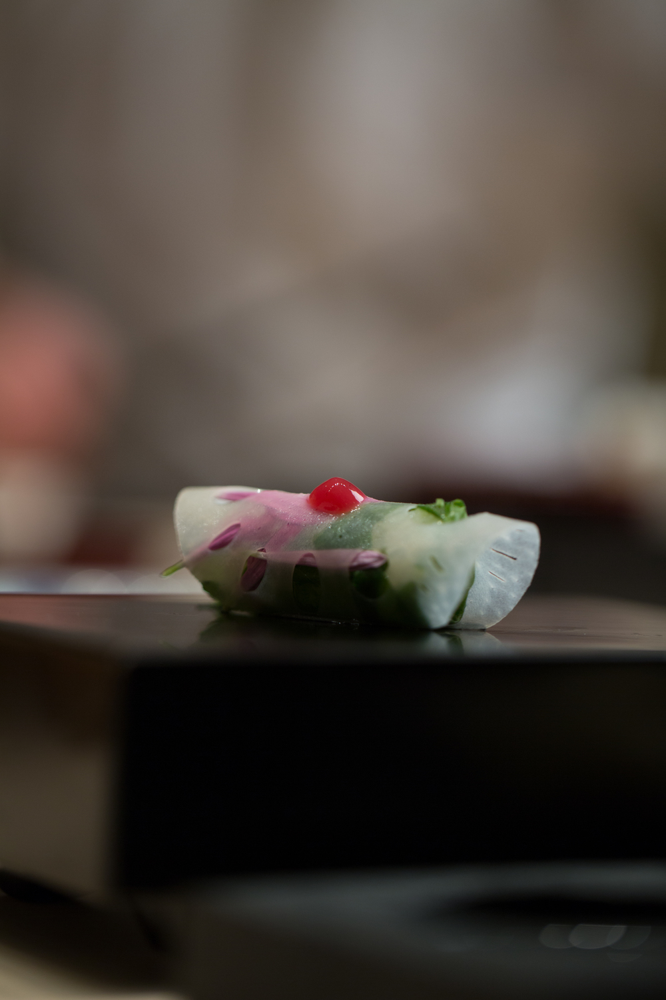
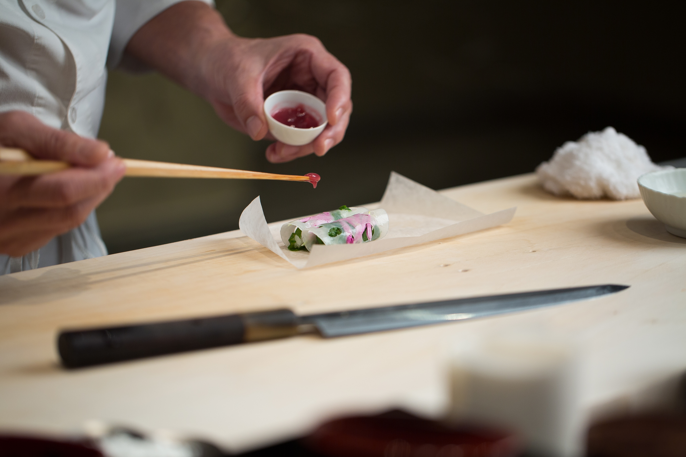
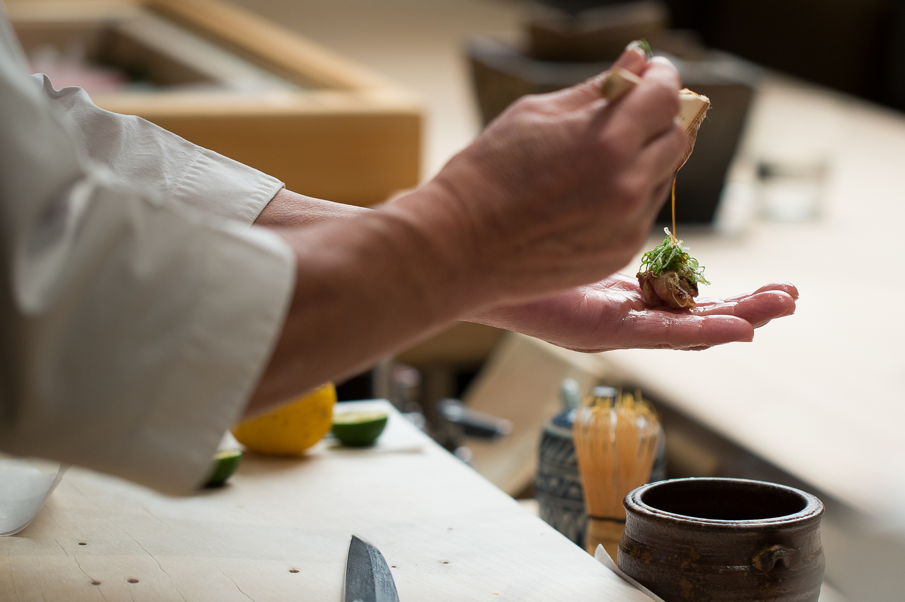
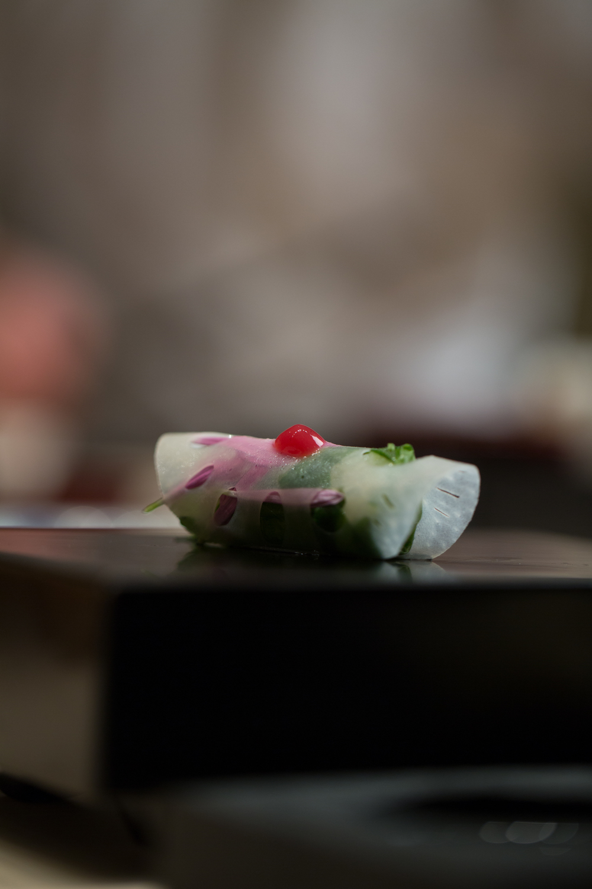
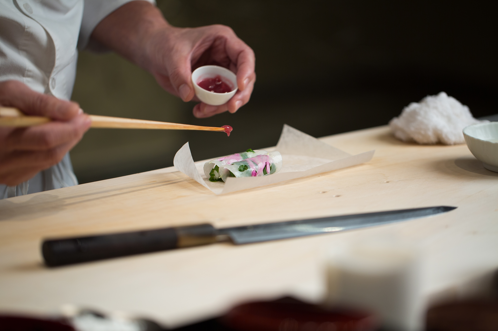
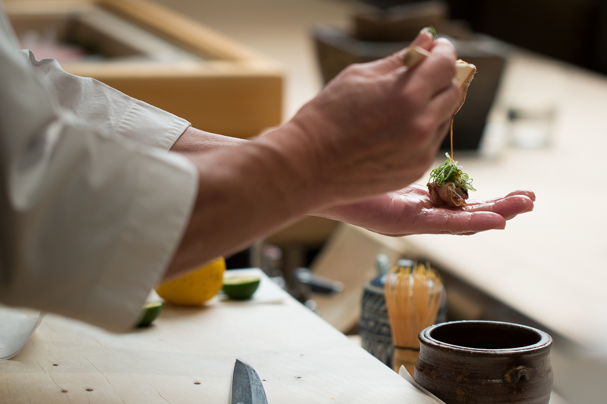

Inside

Food
 





About
Masa is a Japanese and sushi restaurant located in Manhattan in New York City. The restaurant was opened by Chef Masa Takayama in 2004 and is considered one of the most expensive restaurants in the world, as well as the most expensive restaurant in New York City.
MICHELIN Guide’s Point Of View
To taste what may be the continent’s best sushi, experience the quiet, contemplative and very exclusive ceremony of Chef Masa Takayama’s omakase. Everything here carries a certain weight, beginning with the heavy wooden door and carrying through to the bill. The room of course is as unchanging and calming as a river stone, set amid blonde hinoki wood and a gargantuan forsythia tree. Yes, you’ll forget it’s on the fourth floor of a mall.
Attention to detail is unsurpassed and at times it may seem like a bit much, but a reverential spirit is part of your meal here. Service displays the same smooth grace, with servers at-the-ready carrying their hot towels, fingerbowls, tea and bits of insight.
Awaken the palate with a sweet chunk of hairy crab meat dressed in citrusy yuzu beneath creamy tomalley. This may be followed by the chef’s signature glass coupe of minced toro and a very fine—and very generous—pile of Osetra caviar. Maine uni is downright wondrous, served in its shell with caramelized custard and paper-thin, melting sheets of white truffle. The chef’s selection of sushi is unrivaled; the rice is firm and temperate, garnishes are subtle, and quality of fish is supreme.
Information
- Phone: +1 212-823-9800
- Location: 10 Columbus Circle, New York, 10019, United States
- Website: https://www.masanyc.com/
- Opening hours: Closed: lunch: Monday, lunch: Saturday, Sunday